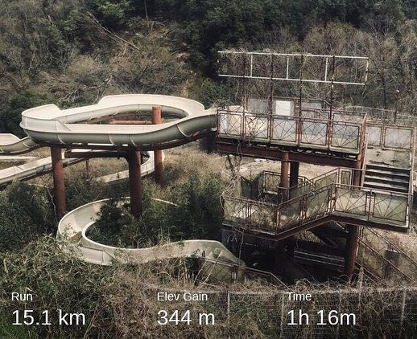
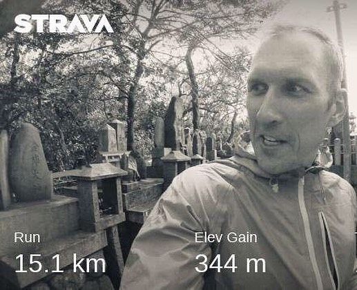
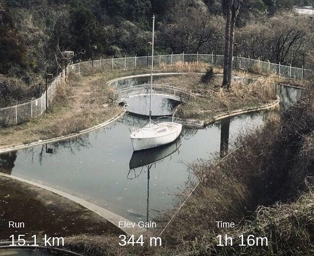
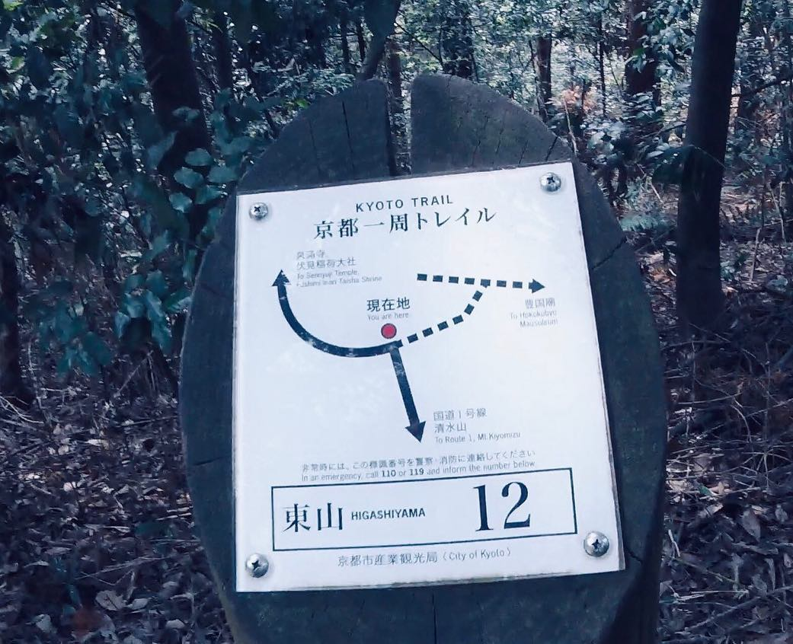
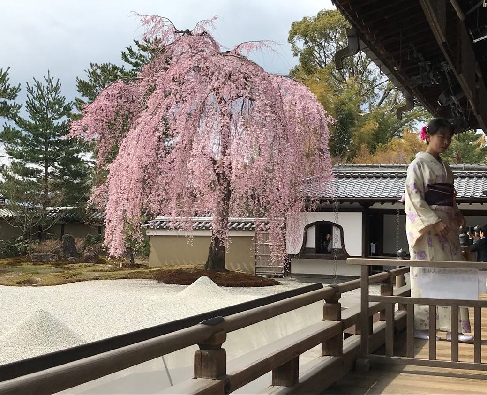
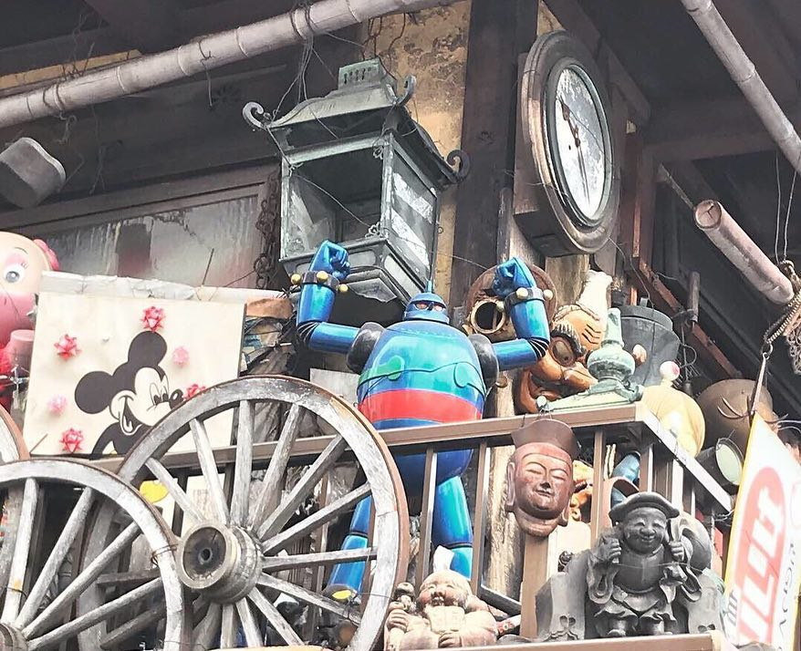
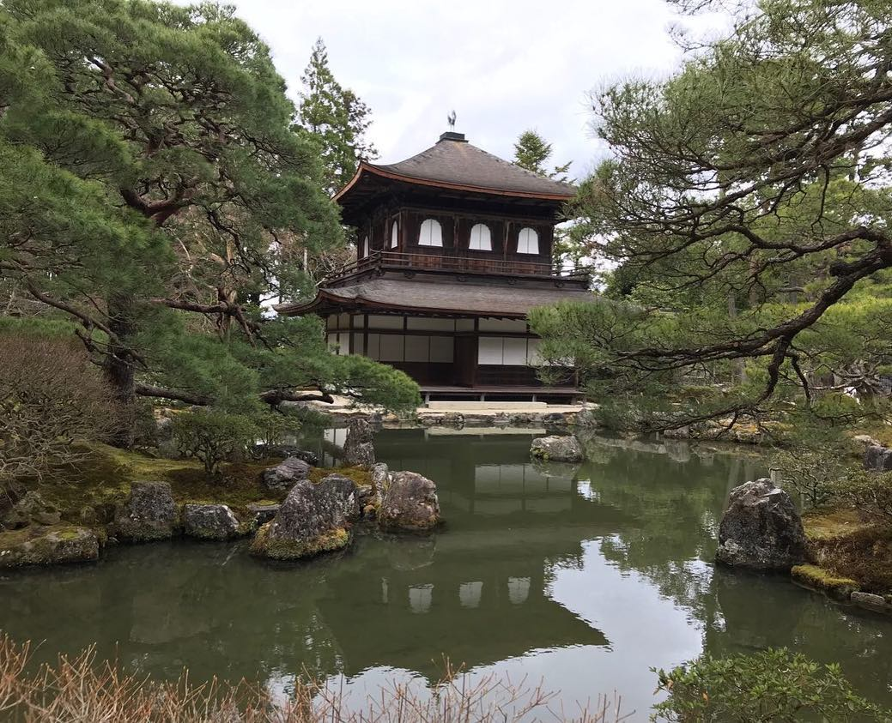
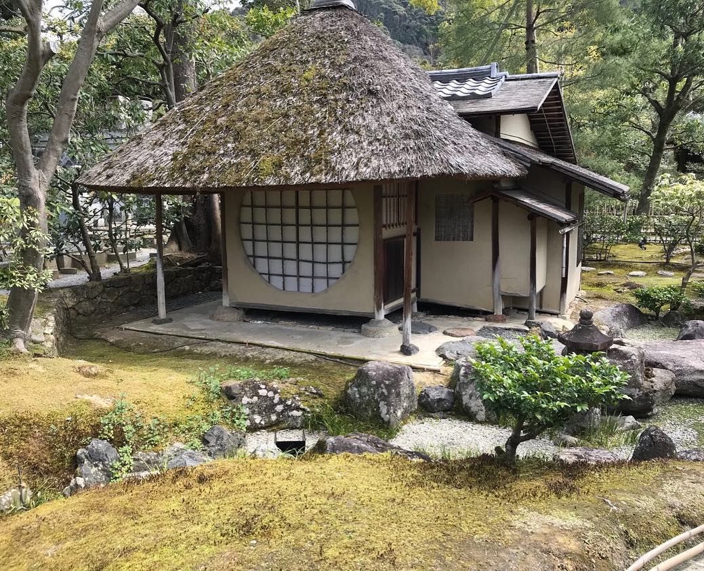

My endurance allows me to go #trailrunning when I’m overseas. I #navigate, engage with people and nature, think deep, feel local and get a lot of professional life inspirations. I engage with territories as they are, without windows, lenses, guide’s nuisance or touristic narratives. #Kyoto trail connects wonderful shrines, forests, summits and suburbs. Well-marked, mapped in Google, safe for non-technical hikers. 🙇🏼♂️#綺麗な #花見 #トレース @ 京都祇園花見小路通り #trailrunning #irunthisbody #marathontraining #ironmantri #swimbikerun #ironmantraining
2019-03-30 13:11:47
Back to main page